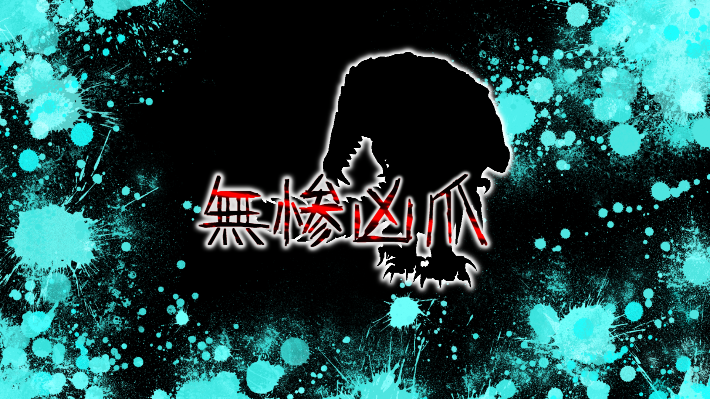
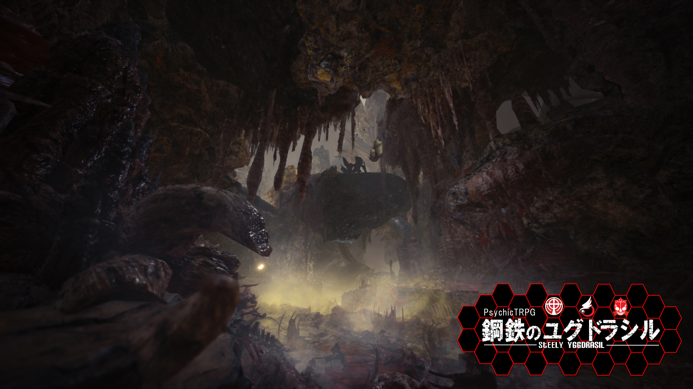

|  |
|
下層のある墓地ビルから、異常なガスが漏れている。吸った人間は肉体を蝕まれ、長時間吸い続けると死に到る。 ……こう言っては何だが、それだけならただの毒ガスである。有り触れたものだった。 問題は、これを吸った人間、及び生物の中に凶暴化する者が現れたのだ。ガスの成分の検査も行ったが全くの未知。 こんな代物を民間に任せておくわけにもいかない。【 テセウス 】は墓地ビルの調査及び、事態の解決に乗り出した。 |
|
原因の究明自体は早かった。 内部を改めると、ある個室が「洞窟」に繋がっており、そこからガスが漏れていたのだ。 「また亜空間の類か」「恐らく主がどこかにいる、そいつを潰せばこの亜空間も消えるだろう」。 考えていた矢先、この事態に【 グングニル 】および【 オルレアン 】が介入してきた。 |
|
【 グングニル 】だけならまだわかる。何か発見があれば研究データとして提出させられるのはいつもの事だ。 だが、【 オルレアン 】まで？ 何故？ 困惑する現地の隊員へ【 ジョン＝ドゥ 】は告げた。 『……成程な』 |
|  |
『良いかテメエら、絶対に連中に出し抜かれるな。他事を考えず、任務の遂行だけを考えろ』 |